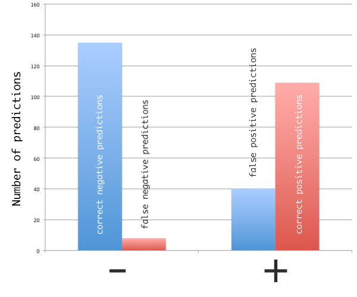
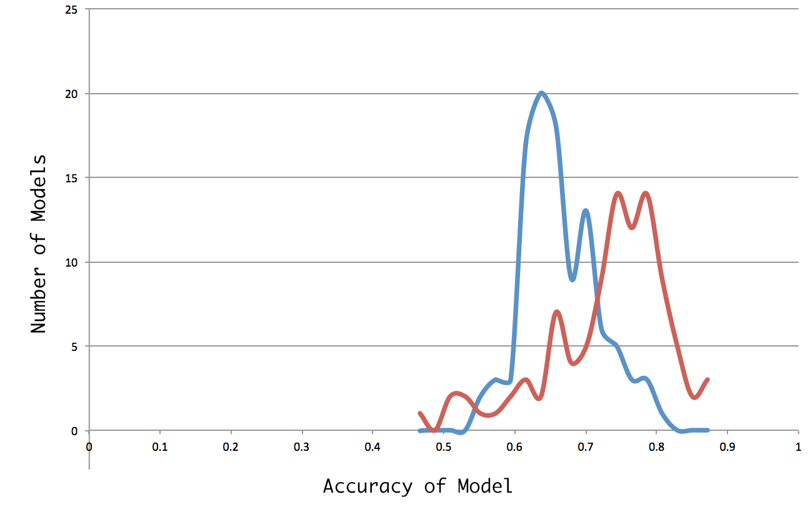

Using historical news and stock data to predict future changes.
What and Why
The main research question this project seeks to answer is: With text data from Google News, can a system using Natural Language Processing and Neural Networks predict the future changes in a stock price?
Results TL;DR
Depending on method of training and testing data selection, a model can be created with up to either 76% or 82% accuracy in predicting future stock price changes. There are, however, practical limitations to the model which are addressed further below.
How this project works
A dataset was build containing news headlines and summaries of the top 10 holdings of the S&P 500 ticker symbols from Google News ranging from 1 Jan 2015 to 31 Oct 2015, as well as stock price changes for these symbols and dates. This dataset contains nearly 2700 day/symbol records — or 567,912 words.
Corpus Sample
"-K-LDX-ahbYGeGA8QIID" : {
"bodies" : [ "No companies have done this better over the past decade than JPMorgan Chase (NYSE:JPM) and Wells Fargo (NYSE:WFC). The chart below illustrates this ...", ...],
"date" : "7/30/2015",
"headlines" : [ "Buy Bank Stocks Like a Boss", ...],
"symbol" : "WFC"
}
Using a Bag-of-words NLP model, features were extracted from the data, and a data-set created of text features and price changes for each stock & date.
A neural network was created using PyBrain and trained on a sample from this data set.
Vectorized Data Sample
{
"input":[0,0,0,0,0,0,0,0,0,0,0,0,0,0,0,0,0,0,0,0,0,1,0,0,0,0,0,0,0,0,0,0,0,0,1,0,0,0,1,0,0,1,0,0,0,0,0,1,0,1,0,0,0,0,1,1,0,1,1,0,0,0,0,0,0,0,0,0,0,0,0,0,0,0,0,0,1,0,1,0,0,0,0,1,0,0,0,0,0,1,0,0,0,0,0,0,0,0,0,0,0,0,0,1,0,0,0,0,0,0,0,0,1,0,0,0,0,0,0,0,0,0,0,0,1,0,0,0,0,0,1,1,0,1,1,1,0,0,0,1,0,0,0,0,0,1,0,0,0,0,0,1,1,0,0,0,0,0,0,0,0,1,1,0,0,0,0,0,0,0,1,0,0,0,0,0,1,0,0,0,0,1,0,0,0,0,0,0,0,0,0,0,1,0,0,1,1,0,0,0,0,1,0,0,1,1,0,0,1,1,0,1,1,0,1,0,1,0,0,1,0,1,1,0,1,1,0,1,1,1],
"output":{"direction":0}
}
Non-training data is then used to test the performance of the neural network.
Results
Using the remaining data (not trained), the neural network has been tested and achieved results up to 82% accuracy.
Prediction distribution
False positives and negatives
Model Accuracy
Model Accuracy is measured simply by dividing the total number of correct prediction by the number of tests run. The two methods of grouping test and training data have different accuracy distributions: 76% or 82% at most for both methods.
Train & Test data selection
There were two methods of dividing the dataset into training and testing data. Method 1 is to iterate through the data set, and to randomly assign data points to testing or training groups. This method created models with a accuracy in the 60-70% range.
Method 2 is split the data at a mid-point (or by a specific date), and group data before to the point into training and data after that point into testing. This method created models with accuracy in the 70-80% range. Although this method achieved higher accuracy on test data, Method 1 is a more accurate simulate of how the model would be used predicting future stock prices, and is therefore more reliable.
Model Distributions
Technology Used
Node.js is used to run a web-scraper with asynchronous web requests to fetch the news data from Google News and save it to Firebase (Cloud Database). It is also used to extract features from the corpus, and create a Bag-of-Words data-set based on the features.
Natural is a Natural Language Processing toolkit for Node.js. It is used to tokenize and stem the corpus.
Python is used to create and train a neural network model using and random sample of < 50% of the data-set.
PyBrain is a Machine Learning framework that is used to create a train the prediction neural network
Project Information
This project was created by Michael Jasper as course-work for CS 6900 at Utah State University.
This page was last updated on 23 Nov 2015.